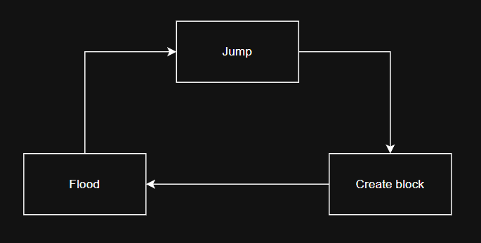
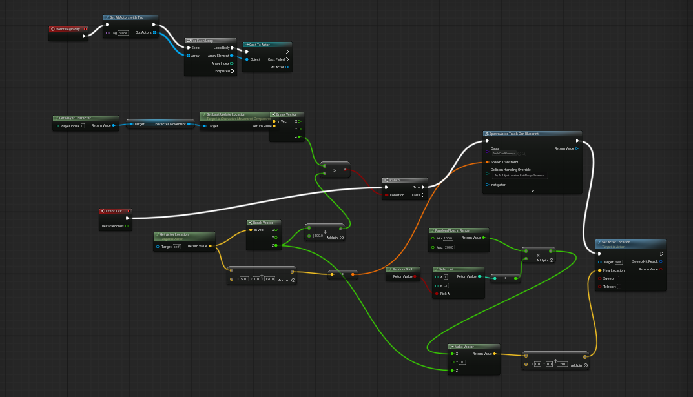
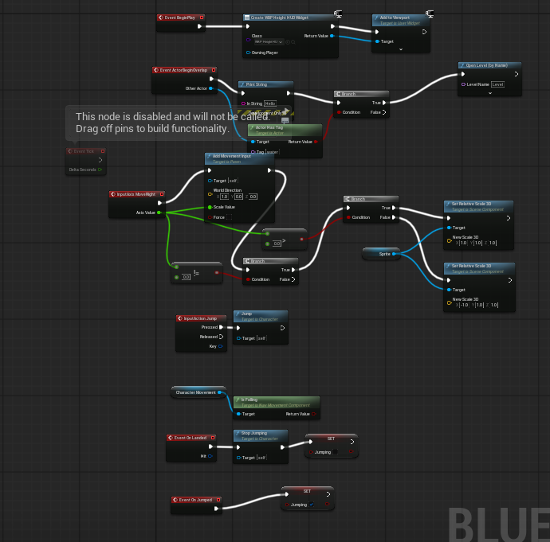
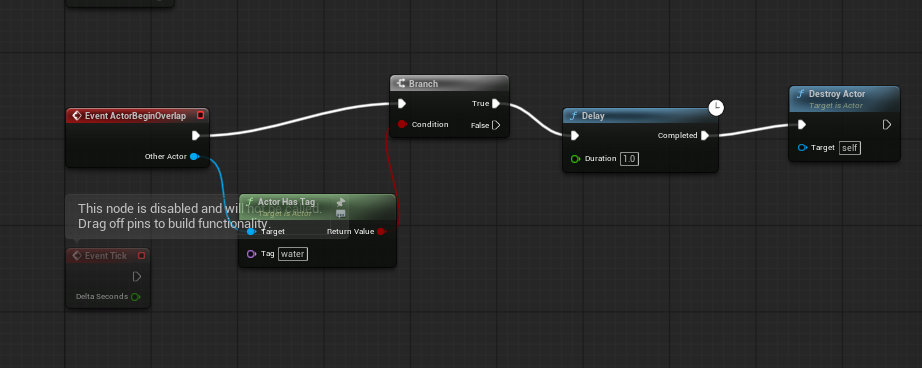

City Flood
Game Practice Project
Made with Unreal Engine 5
Dev by: Teerapuwanai Chanachaisombud
Cityflood Core Gameloop

Features
Enemy System
The Modular Enemy Framework is an architecture built on the principle of Separation of Concerns. This structure ensures that the codebase remains clean, flexible, and highly scalable for future development.

Class EnemyBase
In this project, I designed and developed an Enemy AI system using an Abstract Base Class as a foundation for all enemy types. This architecture ensures the codebase remains flexible and highly scalable for long-term development.


Class EnemyAnimation , EnemyController
The EnemyController class serves as the decision-making hub, determining the enemy's behavioral states and logic. Meanwhile.
The EnemyAnimation class is responsible for managing and updating the enemy's animation parameters to ensure visual synchronization.


MoveToPlayer
This architectural approach ensures the system is both maintainable and scalable. My objective was to build a robust framework that enables the rapid integration of new enemy types by clearly decoupling logic, data, and visuals in accordance with industry standards..
PerformAttack
The PerformAttack method is defined as an abstract method, serving as a structural contract that mandates every enemy subclass implement its own unique combat logic. By decoupling the attack execution from the core AI state management, I can easily implement specialized behaviors—such as the Rat's poison affliction or the Slime's slow effect—without modifying the foundational AI framework. This ensures high extensibility and follows the Open-Closed Principle of object-oriented design.
- Dynamic Debuff System: During the attack phase, the Slime reduces the player's movement speed by 50%, adding a strategic layer to the combat.
- Decoupled Combat Logic: By utilizing the IDamageable interface, the Slime can interact with any destructible object without being tightly coupled to specific player or object classes.
- Optimized Performance: I utilized a HashSet for real-time target tracking to ensure high-performance lookups and prevent duplicate entries, along with a robust cleanup routine to handle null references and maintain system stability.
Class Slime
The Slime class demonstrates the extensibility of the core framework by overriding the base attack logic to implement a specialized 'Slow' debuff mechanic.

- Multi-Phase Attack System: By overriding the PerformAttack method, I implemented a dual-layered combat logic that inflicts both immediate physical damage and a lingering poison effect.
- Decoupled Architecture: Using the IDamageable interface, the Rat interacts with any destructible entity seamlessly, maintaining a clean separation of concerns and reducing code dependency.
- Performance-Oriented Target Tracking: I utilized a HashSet for highly efficient O(1) lookups and implemented a robust cleanup routine to handle null references, ensuring optimal performance even in crowded combat scenarios.
- Data-Driven Balancing: The poison parameters are exposed via serialized fields, allowing for rapid iteration and balancing of game mechanics directly within the Unity Editor.
Class Rat
The Rat class implements a specialized combat mechanic focusing on Status Effects and Damage over Time (DoT).

- Polymorphic 2D Pathing: By overriding the MoveToPlayer method, the Bat implements full Vector2 movement. It calculates the normalized direction between itself and the player, allowing for smooth flight paths across the entire 2D space.
- Physical-Based Movement: It utilizes Rigidbody2D velocity controlled by directional vectors, ensuring consistent movement speed regardless of the distance to the target.
- Interface-Driven Interaction: Consistent with the project's architecture, the Bat interacts with targets via the IDamageable interface. This ensures that the combat system remains decoupled and highly reusable.
- Robust State Management: The implementation includes safety checks within the attack logic to handle destroyed objects, preventing memory leaks and maintaining the integrity of the HashSet target tracking system.
Class Bat
The Bat class showcases the power of the framework's Polymorphism by transitioning from ground-based movement to an Aerial AI system.

IDamageable
The IDamageable interface decouples combat logic from specific entity classes, allowing enemies to interact with any target—whether player characters or other objects—without needing to know their underlying types. Furthermore, incorporating specialized methods like ApplyPoison demonstrates a scalable architectural approach for managing complex combat mechanics and status effects across diverse game entities efficiently.